ガーデンシクラメンを買いました。
2020/11/15
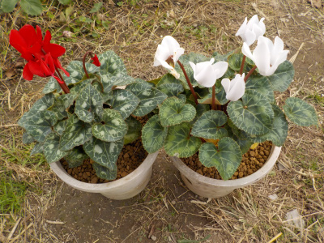
花を増やすと手間が増えます。
今以上増やして作業を増やさなくてもいいんじゃないかと思うと、買わない方がいいと思います。
でも目立つし、鉢植えの冬なので週一の水やりで十分かなと思い買いました。
手入れが悪くて枯れたらあきらめます。
ガーデンシクラメンは1年で捨てる人が多い気がしますが、私は毎年咲かせようと夢を見ています。
夢があるのっていいですね。
更新日 : 2021/12/11
2020/11/15

花を増やすと手間が増えます。
今以上増やして作業を増やさなくてもいいんじゃないかと思うと、買わない方がいいと思います。
でも目立つし、鉢植えの冬なので週一の水やりで十分かなと思い買いました。
手入れが悪くて枯れたらあきらめます。
ガーデンシクラメンは1年で捨てる人が多い気がしますが、私は毎年咲かせようと夢を見ています。
夢があるのっていいですね。
2020/12/06
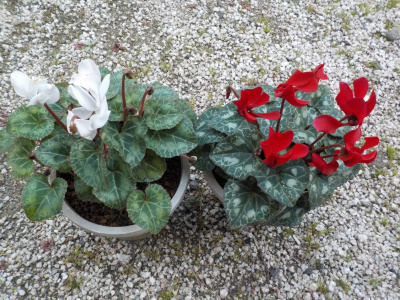
シクラメン用の水が溜まる鉢だと週1の水やりで大丈夫そうです。
今のところ大丈夫なので、たぶんこれからも大丈夫。
シクラメンは受粉させたら種が出来るそうなので、今日は綿棒で受粉作業をしました。毎週水やりの時に受粉もやるつもりです。
2021/01/11
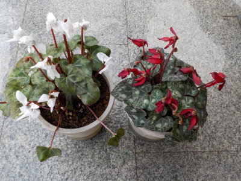
ガーデンシクラメンは耐寒性があるので軒下で大丈夫って思っていたら、白い花がシオシオになっていました。
赤い花も黒く弱々しくなりました。
葉っぱは大丈夫そうなので、このまま軒下に置いておきます。
ネットで検索してみたら、ガーデンシクラメンの体感温度はマイナス5度くらいって書いてあるのを何件か見ました。寒波の時は屋内に入れた方が良さそうです。
2021/3/14
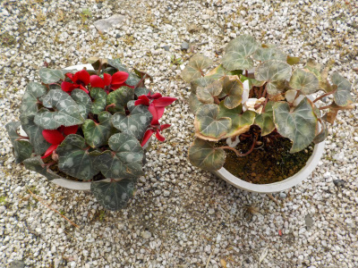
シクラメンは冬のイメージですが、後どれくらい持つんでしょう？
白い方は寒波で痛んでからずーっと元気がないです。
赤い方は葉っぱばかり大きくなり、花が葉っぱに埋もれてしまいました。
そろそろ終わりかな。
2021/06/13
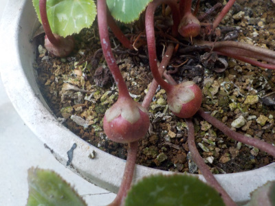
小さい花のガーデンシクラメンですが、実が大きいんですね。
なんか異質な感じがします。ちょっと気持ち悪い。
でも種が採れるのはうれしいです。あとどれくらいで熟れるんでしょうね。
2021/06/26
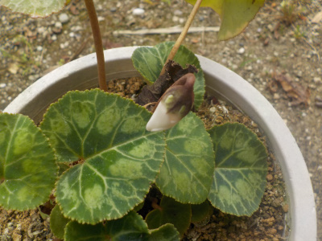
もうちょっとで咲きますね。
今ツボミが2つ出来てます。
このまま休眠させないで水をやって育てようと思います。
2021/07/03
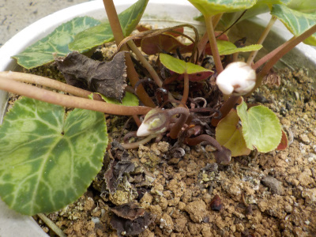
これで3個目のツボミです。
1地番目のは開花済み。
このまま来年の春まで咲くなんてことはないんだろうなー。終わりの日はいつ来るんだろう。
2021/07/03
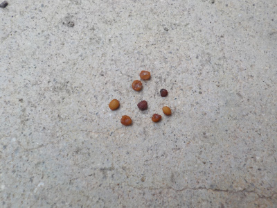
屋根がある場所に置いてあったんですが、豪雨で葉や茎が濡れてしまいました。
シクラメンの実も濡れたせいか、一部の実や茎が萎れてしまいました。
萎れた実から種を採りだしたんですけど、意外と小さいですね。
実が大きいので種も大きいかと思っていました。
2021/07/18
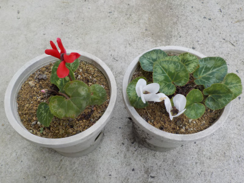
今までは白だけ咲いていたんですが、赤も咲きました。
前回の豪雨で葉っぱが減りましたが、今は調子が良さそうです。
また豪雨が来ると思うので、雨がかからない安全な場所を作って置きたいです。
2021/08/13
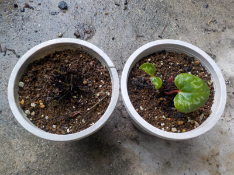
軒下に置いていましたが、台風と豪雨でびしょ濡れが状態が続きました。
球根が腐らないといいですが、どうでしょう。
屋外で涼しくて雨の当たらない場所って我が家にはないので、対策がとれないです。
復活すれば育てるし、ダメだったら諦めます。
もう買うことはないかな。
2021/10/31
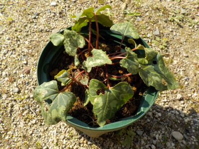
去年2ポット買ったガーデンシクラメンですが、1つは枯れましたが1つは夏越しして大きくなりました。
今までは底面給水鉢を使っていましたが、鉢が壊れたのでスリット鉢に植え替えました。
底面給水鉢は水やりが楽ですが、普通の鉢の方が元気の育つ気がします。
2021/11/21
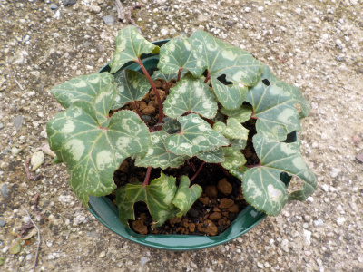
一応休眠なしで育てたので、早い時期から開花していいはすなんですが、今のところ花が咲いていません。
何か問題があるんでしょうね。
お店やさんで開花しているガーデンシクラメンがうらやましいです。
2021/12/05
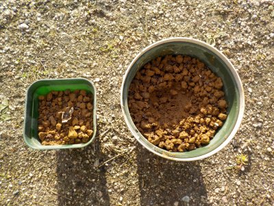
底面給水鉢と、小さなポットに種を蒔きました。
何かの本に12月に種蒔きするって書いてあったので今ごろ蒔いたんですけど、発芽条件って何でしょうね。
寒い時期に種蒔きって、何か不思議な感じです。
2021/12/11
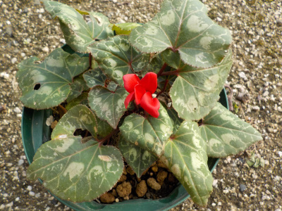
なかなか咲かなかったガーデンシクラメンがやっと咲きました。
良かった。良かった。